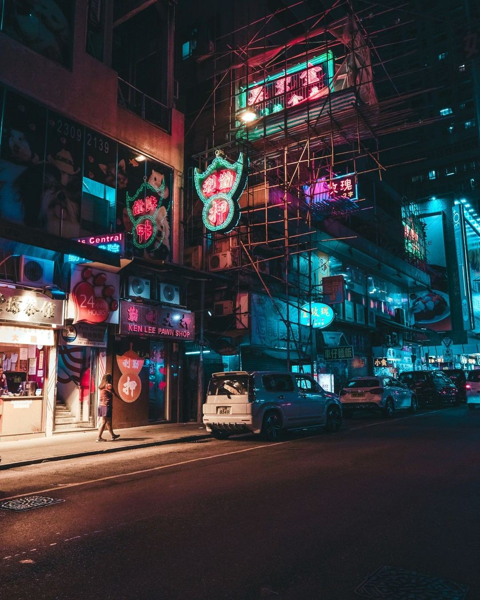
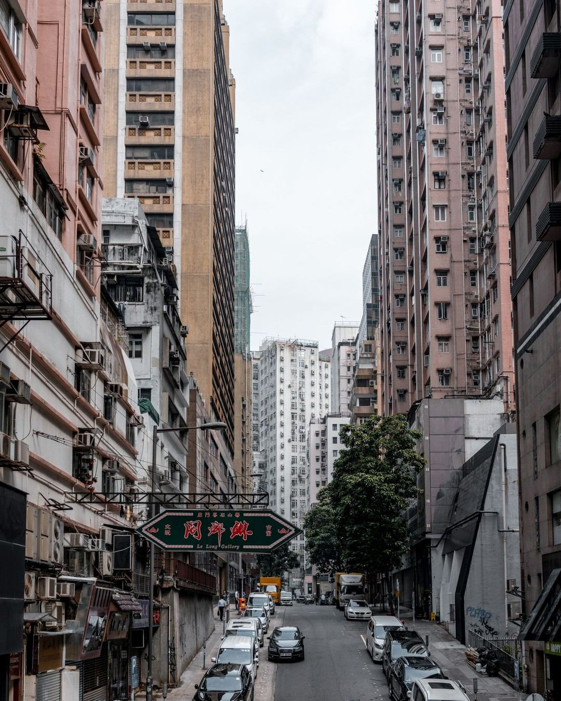
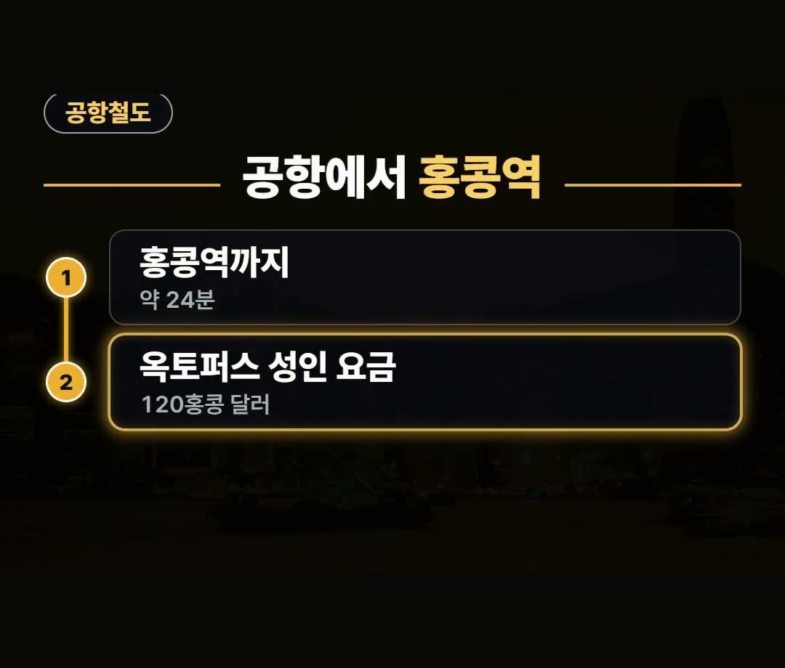
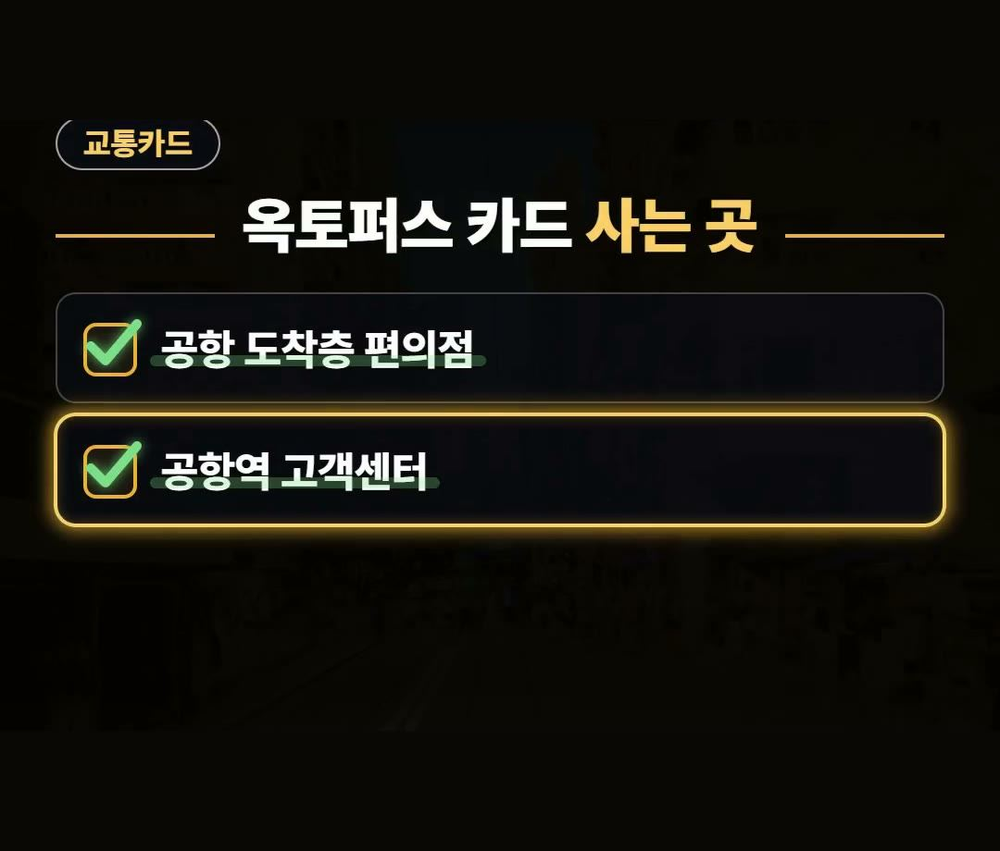
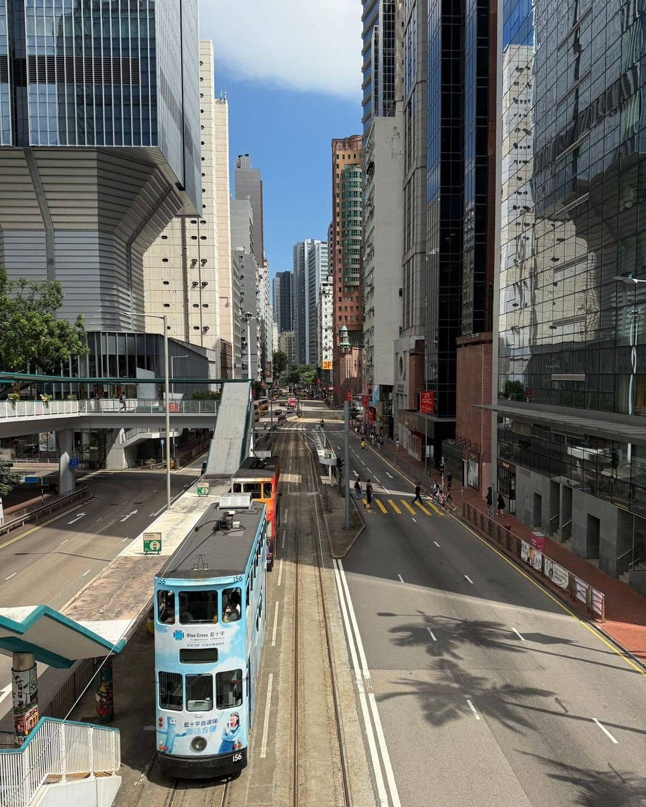
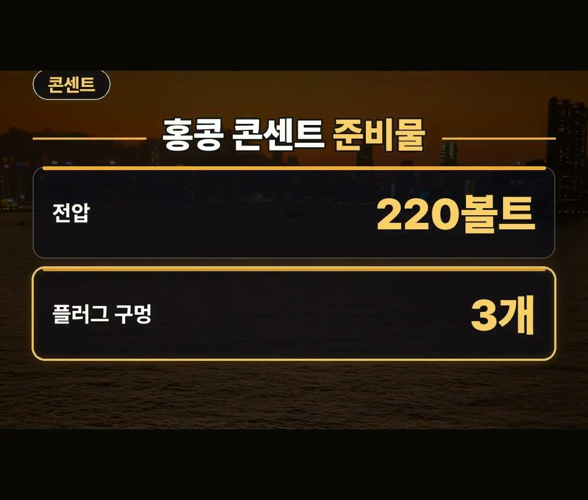

홍콩 여행 준비물, 이거 안 챙기면 손해 봅니다
※ 이 글에는 제휴 링크가 포함되어 있으며, 링크를 통해 예약·구매하시면 일정 수수료를 받을 수 있습니다. (가격은 같습니다)
※ 이 포스팅은 쿠팡 파트너스 활동의 일환으로, 이에 따른 일정액의 수수료를 제공받습니다.
홍콩으로 떠날 계획을 세우면서 무엇을 미리 준비하고 주의해야 할지 고민이라면 4가지를 미리 알아 두면 좋습니다.
입국 과정에서 달라진 변경 사항부터 교통편, 콘센트, 반입 금지 물품까지 미리 알고 가면 손해 보지 않고 깔끔하게 여행을 시작할 수 있습니다.
2026년 10월 최신 기준으로 정리한 홍콩 여행 정보입니다.
2024년 10월부터 종이 입국신고서가 전면 폐지되었고 전자담배는 가열식까지 모두 반입 금지니 꼭 기억하세요! 💡

종이 입국신고서 작성 폐지 소식

홍콩 여행 준비물을 챙기기 전 가장 먼저 알고 계셔야 할 점은 입국 절차의 변화입니다.
홍콩은 2024년 10월부터 종이 입국신고서가 전면 폐지되었습니다.
예전처럼 기내나 공항에서 입국 카드를 따로 쓰지 않아도 돼서 한결 편리하게 입국하실 수 있습니다.

홍콩 여행 준비물 체크리스트 공항철도 요금 및 이동시간
공항에 도착한 후 시내로 이동할 때 공항철도를 이용하면 홍콩역까지 약 24분 만에 도착합니다.
빠르게 시내로 이동할 수 있어 시간을 아끼기 좋은 교통수단입니다.

2026년 10월 기준 공항철도 성인 요금 정보는 다음과 같습니다.
- 옥토퍼스 카드 성인 요금: 120홍콩 달러 (약 2만 1천 원)
홍콩 여행 준비물 리스트 옥토퍼스 카드 사는 곳
홍콩 여행 준비물 체크리스트에서 빠질 수 없는 것이 바로 교통카드입니다.
옥토퍼스 카드는 현지에서 대중교통을 이용할 때뿐만 아니라 식당에서도 자주 쓰입니다.

관광객용 옥토퍼스 카드는 공항에 도착해서 바로 구매할 수 있으며, 사는 곳은 다음과 같습니다.
- 공항 도착층 편의점
- 공항역 고객센터
데이터의 경우 공항에서 줄 서지 말고 이심으로 미리 챙겨 가시는 것도 좋은 방법입니다.
콘센트 전압과 삼구 멀티 어댑터

홍콩의 전압은 한국과 같은 220볼트입니다.
하지만 플러그 형태가 달라서 사전 준비가 필요합니다.

- 전압: 220볼트
- 플러그 구멍: 3개 (삼구 플러그)
구멍이 3개인 삼구 플러그를 사용하므로, 현지에서 전자기기를 충전하려면 멀티 어댑터를 미리 챙겨야 합니다.
전자담배 반입 금지 주의사항
홍콩으로 출국할 때 반드시 주의해야 할 물품이 있습니다.
홍콩은 전자담배가 가열식까지 모두 반입 금지되어 있습니다.
가지고 들어가면 벌금을 물 수 있으므로 가열식 전자담배를 포함해 절대 챙겨가지 않도록 주의해야 합니다.
정리
- 2024년 10월부터 종이 입국신고서가 전면 폐지되어 입국 카드를 쓰지 않아도 됩니다.
- 공항철도로 홍콩역까지 약 24분 소요되며, 2026년 10월 기준 성인 요금은 옥토퍼스 카드로 120홍콩 달러(약 2만 1천 원)입니다.
- 삼구 멀티 어댑터를 미리 챙겨야 하며, 가열식 포함 전자담배는 반입 금지라 벌금을 물 수 있습니다.
최저가 예약 링크는 아래에 모아 두었어요.
지금 쓸 수 있는 여행사 할인
- 📶 해외 데이터는 이심으로 미리 준비하세요 (마이리얼트립 마이심)
※ 여행사 사정으로 조건이 바뀌거나 일찍 끝날 수 있어요. 예약 전에 여행사 화면에서 한 번 더 확인하세요. (2026-10-05 확인)
📌 2026년 10월 기준 정보예요. 가격은 환율·시기에 따라 달라질 수 있어요.
· 홍콩 정부 보도자료 (입국·출국 카드 폐지 2024년 10월 16일)
· 홍콩 정부 뉴스 (반입 금지 물품 안내 2023년 1월 6일)
사진·영상영상 화면: Pexels (David Lomax, Glenn Langhorst, Nirjhar Basak)
사진: Pexels (Airam Dato-on, Gije Cho, TIM3LAB C, Juraj Vice)
사진: Pixabay (carloyuen)